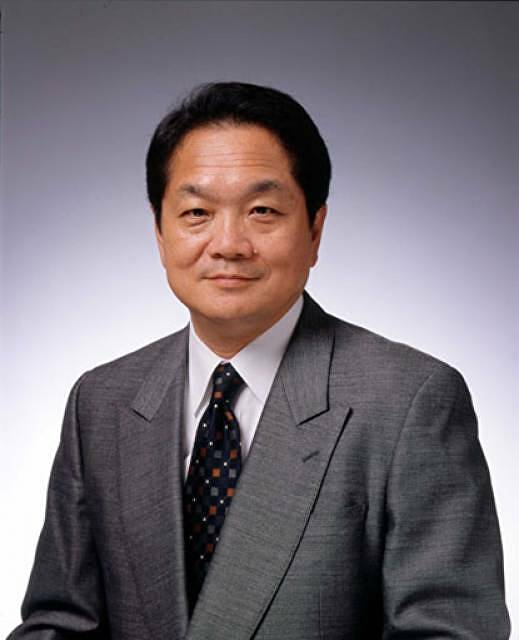
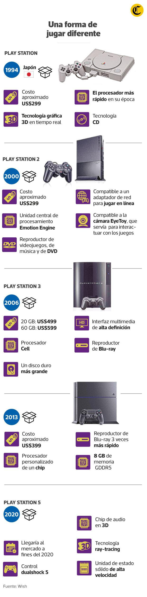
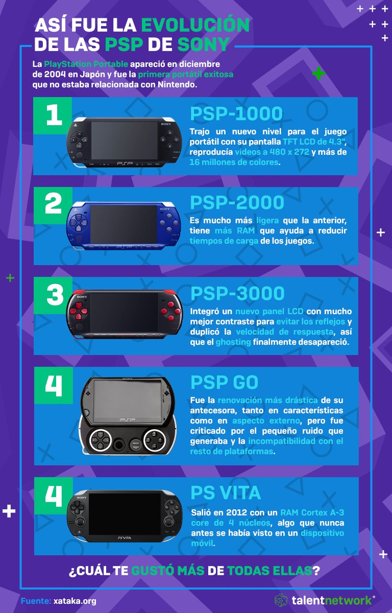

PlayStationaren historia
PlayStationek hainbeste emozio eman dizkigu bi hamarkada baino gehiagoan, eta gaur egun oso presente eta tinko dago teknologia berrira egokitutako kontsolak garatzen, Microsoftek garatutako Xbox-en kontrapartearekin maila handian lehiatuz.
Asmatzailea

PlayStationen sortzailea Ken Kutaragi izan zen, eta hark egin zuen, gainera, bere proiektua merkaturatzeko ezinezko guztia. Gertaera hori 1994aren amaieran gertatu zen ofizialki, eta arrakasta handia izan zuen maila globaleko salmentetan, Sony konpainia eta PlayStation marka industriaren barruan garrantzitsutzat hartuta.
Sonyk garatzaileei eman zizkien erraztasunak eta eduki-aukerak handitzen zituen CDaren formatua sartzea izan ziren gakoak.
1996an Sonyk hainbeste erraztasun jarriko lituzke erabiltzaile eta jokalari independenteek bideojokoak garatzeko aukera ematen zuen modelo baten eskura.
Bideojokoen 5. belaunaldian, zuzenean lehiatu zen Nintendo 64rekin eta SEGA Saturnekin.
Nintendo 64an ez bezala, PlayStation-ek diskoak erabiltzen zituen kartutxoen ordez, eta horrek abantaila handia ematen zion biltegiratzeari, grafikoei eta audio-kalitateari.
Nintendo, berriz, Nintendo 64 ontzia flotatu nahian zebilen. Joko gogoangarriak izan zituen eta bideojokoen industria definitzen lagundu zuen, baina PlayStationek eragindako inpaktua izugarria izan zen, eta ezin izan zuen lehiatu.
La consola de Sony fue una de las primeras en el mundo en sobrepasar las 100 millones de unidades vendidas, y aunque no tenía una memoria interna como si la tenían los cartuchos de Nintendo 64, si contaba con un catálogo de juegos icónicos, hitos de la industria como Resident Evil, Tekken, Tomb Raider, Final Fantasy 7-8 y 9, Castlevania: Symphony of the Night, Silent Hill, Metal Gear Solid, Gran Turismo o Chrono Cross.
Jatorria
PlayStationaren jatorria ironikoa da. 90eko hamarkada “urrunetan”, Nintendok bideojokoen errege absolutu gisa sendotuko duen urrats erraldoia eman nahi zuen. Helburu hori lortzeko, kartutxotik CDra pasatu behar zuen.
CDa irakurtzen zuen gehigarri hori garatzeko, Nintendok Sony enpresa japoniar batekin aliatzea erabaki zuen, han egingo baitzen lehen Nintendo PlayStation-a.
Hala ere, zenbait desadostasunen bidez, Nintendok Sonyrekin akordioak haustea erabaki zuen, eta haren ordez Philips konpainiarekin bat egin zuen, Philips CDi izenarekin ezagutzen den porrot izugarria eragin baitzuen.
Bestalde, Sonyk PlayStationaren prototipo bat besterik ez zuen, sortu aurretik bideo-kontsolen merkatuan parte hartzeko interesik ez zuena.
Baina, proiektu horrekin, kontsola hori garatzen jarraitzea erabaki zuten, nahiko aurreratua baitzegoen. Horrela, Nintendok zeharka lagundu zion PlayStation sortzen.
PlayStationeko kontsolen historia eta bilakaera

PlayStation One
2000. urtean, bertsio dotoreago, polit, txiki eta indartsuago batek ordezkatuko luke PlayStation, urte batzuk geroago bertsio hobetua ateratzeko tradizioari bide emango liokeena.
Esta consola también tenía la facilidad de ser portátil, con lo que se creó para ello con una pantalla y una fuente de poder que permitía llevar la consola a cualquier lugar que quisieras sin la necesidad de una televisión o un enchufe, casi dos décadas antes de que el Nintendo Switch lo hiciera.
PlayStation 2
Bideo-kontsolen 6. belaunaldia irekiz, 2000. urtean Sonyk PlayStationen ondorengoa merkaturatuko zuen.
Playstation2, bere aurrekariarekin guztiz bateragarria izango litzatekeena. Ezaugarri hori da lehiakideen aurrean arrakasta lortzeko giltzarrietako bat. Gainera, orduan DVD erreproduzitzaile baten prezioa baino txikiagoa zen, eta Playstation2 formatuarekin bateragarria zen.
Gaur egun ere kontsola salduena da. PlayStation 2 arrakastatsua izan zen, 155 milioi kopia baino gehiago saldu baitzituen, nahiz eta Sonyk seigarren belaunaldirako eragile titanikoekin lehiatu behar izan zuen, hala nola Nintendoren Game Cube, Sega Dreamcast eta gerrara iritsi berria zen Microsoften Xbox.
Horien guztien aldean lehiatzeko abantaila eman zion, azkenean, 2.000 titulu baino gehiagoko bideojokoen liburutegi masibo zabala izateak.
Kontsola honek izenburu ezagunenak zituen: Grand Theft Auto 3, Ville City eta San Andreas, Final Fantasy 10, Kingdom He1 eta 2, God of War 1 eta 2 eta Gran Turísmo 3.
PlayStation Slim
2004an, PlayStation 2-k PlayStation Slim-ekin lerroaren tratamendu murriztailea jasoko luke; gailu meheagoa, txikia, ez hain zaratatsua estilizatua eta Ethernet ataka natiboa izango luke, linean jokatu ahal izateko.
PlayStation 3
Jokoak gero eta zorrotzagoak ziren, eta, horregatik, Sonyk nahiko boteretsua zela uste zuen txip bat bota zuen. PlayStation 3n ezarri zuen, oraingoan Blu-ray erabiliz formula nagusi gisa.
Kontsola horrek 80 milioi unitate saldu zituen, ez aurrekoak adina, baina ez da inondik ere baztergarria. Zuzeneko konpetentzia Microsoft-en Xbox 360 eta Nintendoren Wii izango lirateke. PlayStation 3 ikaragarria izan zen hasieran, kostu handia zuelako: 599 dolar, merkatuko kontsolarik altuena.
Kontsola horren bidez, Sony jokagarritasunaren merkatura abiatu zen, zoritxarrez historiako eraso zibernetiko okerrenetako bat jasaten zuen PlayStation network delakoarekin bat etorriz. Horrek agerian utzi zuen zerbitzuaren ahultasuna, The Last of Us, Grand Theft Auto 4 eta 5, Uncharted 3 eta 4, War Goar Solar izenburu sinestezinak izan arren.
PlayStation 3 Slim
2009an, Sony-k PlayStation 3-ren Slim bertsioa kaleratu zuen. Bertsio hori argiagoa eta boteretsuagoa zen, eta baliabide gutxiago kontsumitzen zituen, eta nabarmen hobetu zuen bere birberotzea. PlayStation-en beste logo bat erabili zuen lehena izan zen, baina ez PlayStation 3-a argaltzeko asmotan, PlayStation Slim edertasun-estandarren bertsioa ere sortu zen 2012an.
PlayStation 4
Iragarpen guztien aurka, PlayStation 4 jaurti zuten 2013an, eta lehen 24 orduetan milioi bat kontsola saldu zituen.
Sonyk irudiak eta bideoak errazago partekatzeko funtzioak hobetzea erabaki zuen, eta aurreko bertsio guztietan zeuden Select eta Start ohiko botoiak aldatu zituen, informazioa berehala partekatzeko aukera ematen zuen botoi batekin: Dualshock-a, argi-barra bat, funtzio anitzeko botoi zentral bat, bozgorailu bat eta estaldura ergonomiko espezializatu bat dituena.
Kontsolako joko garrantzitsuenen artean daude Uncharted 4: A Thief’s End, Bloodborne, infamous second son, Spiderman eta Horizon Zero Dawn.
Espero izatekoa zen bezala, PlayStation 4ak bere erredukzio-tratamendua jaso zuen, eta horrela sortu zen PlayStation 4 Slim, ez baitzen hain zaratatsua.
Hori nahikoa ez balitz, Sonyk eta Microsoftek Xbox one s eta Sony-rekin Bitarteko Microsoft belaunaldi bat abiaraztea erabaki zuten, PlayStation 4 pro produktuarekin. Belaunaldi berriko kontsolak ez ziren arren, ahalmen grafiko eta prozesamendu handiagoko bertsio ahaltsuagoak ziren.
PlayStation 5
Microsoft-en lehiakide nagusiekin batera merkatura iritsita, PlayStation digital bertsioa eskaintzen du Sonyk. Bertsio merkeagoa da, disko-irakurgailurik gabea, eta jokoak plataforma digitalera mugatzen ditu. Bertsio erregularra ere eskaintzen du: PlayStation 5, 8k joko bikainak egin baitzituen, eta DualSense, erantzun haptiko nabarmena duen kontrol berriaren izena.
God of War Ragnarok, Spiderman Miles Morales eta Harry Potter Hogwarts Legacyren munduan dagoen rpg bat dira kontsola horren adierazgarri nagusiak.
PlayStation-en eramangarriak
PlayStation Portableren laburdura kontsola eramangarria izan zen, eta Sonyk Nintendok arazo handirik gabe menderatzen zuen merkatua kontratatzeko apustua egin zuen.
Hasieran PSPri ezartzea kostatu zitzaion arren, pixkanaka kalitate handiko tituluak jaso zituen.
Multimedia-funtzioez gain, PSP2000, haren lodiera murrizten zuena, edo PSP3000, pantaila hobetu eta funtzio gehiago hartzen zituena, ere lagunduko zioten.

PSP GO
Ondoren, Sonyk PSPGO merkaturatu zuen, UMD irakurgailurik gabe, eta 16 GB eskaintzen zituen biltegiratzeko eta tamaina txikitzeko.
PSP E1000
PSPStreet izenaz ere ezagutzen da, UMD irakurgailua edukita aurrekoaren guztiz kontrakoa, baina ez Wi-Fi, bere aurrekoak baino kalitate txikiagoa baitu.
PlayStation Vita
Hasieran, erabiltzaileek begi onez ikusiko zuten, Nintendok 3DS modeloarekin zuen hasierako estropezua zela eta. Hasieran Vitak ondo saldu bazuen ere, pixkanaka-pixkanaka salmentak jaitsi egin ziren, Sony-ren babes eskasa zela eta, nahiz eta ez izan hain txarra, ez zuen bere aurrekoaren zorte bera izan.
Sony beste era batera saiatuko litzateke, baina enfasi handirik egin gabe. Vitako salmentak hobetzeko asmoz, talde berriak ekarri zituzten hainbat koloretako aurkezpenetan, baina hori ez zen nahikoa izan salmentak igotzeko.
PlayStation TV
Vita Sony-ren beste berrikuspen batek mahai gaineko kontsola gisa aurkeztu zuen PlayStation TV. Kontzeptu interesgarria zirudien: ordenagailu eramangarriaren jokoak telebistan jolastu ahal izango zenituzke, joko guztiak bateragarriak ez direla eta Netflix-en moduko oinarrizko aplikazioak erabili ezin direla dioen mugatzailerik ez balego.